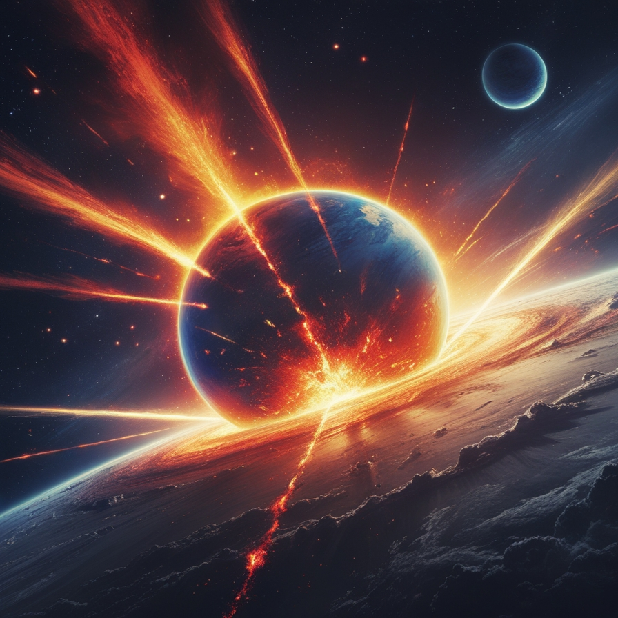

航天知识
晒晒咱的国之重器：风云系列气象卫星，遥看地球万千变幻
信息来源: 光明网
你可能不知道，2017年9月25日至28日，当你打开微信，启动页面上的"地球"，正好是从我们的祖国上空拍摄的。而地球的这张长焦特写，出自目前最牛的静止轨道"地球摄影师"――风云四号A星。
了解更多太空碰撞，危险如何规避?
信息来源: 光明日报
曾经，太空碎片碰撞还是科幻电影中的桥段。现在，这种危险真实存在了——2021年7月和10月，美国太空探索技术公司发射的星链卫星先后两次接近中国空间站，导致中国空间站采取紧急避碰措施。而这，并不是个案。太空如此广袤，为何也会出现这种情况?卫星不能随便"飞"吗?太空"交通规则"该如何建立?
了解更多"天宫"中的家电，你了解多少?
信息来源:国家航天局
说起空间站，想起来就是先进的技术，给人的感觉非常"高冷"，对于大众而言却是看不到、摸不着、用不上。通俗点讲，空间站就像"房车"一样，只不过它是一辆配有实验室并且漂浮在太空里的房车。在完成任务之前，车上人员不能下车，没有额外的补给机会，更像航天员的"太空之家"。
在空间站，航天员除了要完成科研任务，更要保证他们的生活质量。要满足航天员高质量的生活，一些生活电器肯定少不了。你知道空间站究竟有哪些先进的电器吗?
了解更多火星的两极也是冰雪世界吗？
信息来源: 中国的航天
说起地球的南极和北极，大家的脑海中立刻就会浮现冰天雪地、白雪皑皑的画面。那么，地球的邻居——火星，也就是钢铁侠马斯克口中说要移民的星球，它的南北极又是怎样的呢?会不会也是冰天雪地的壮丽模样?
17世纪末，荷兰天文学家惠更斯利用自己设计的精密望远镜，首次发现火星南北极都拥有一个巨大的"白斑"，像是戴着白色的帽子。虽然这位天文大家当时到底看到的是什么样的景象我们不得而知，但后来人类通过努力，拍到了红色星球戴着白色帽子的"证件照"。
了解更多